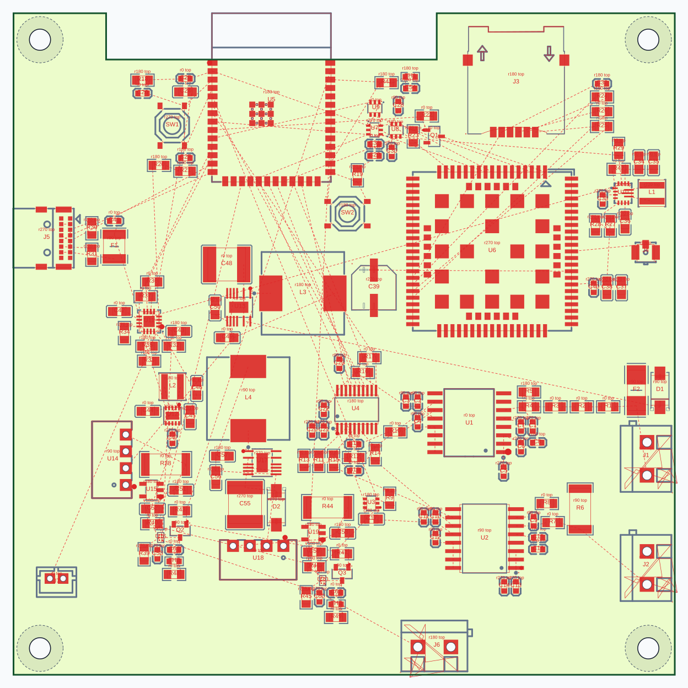
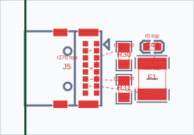
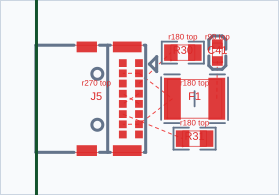
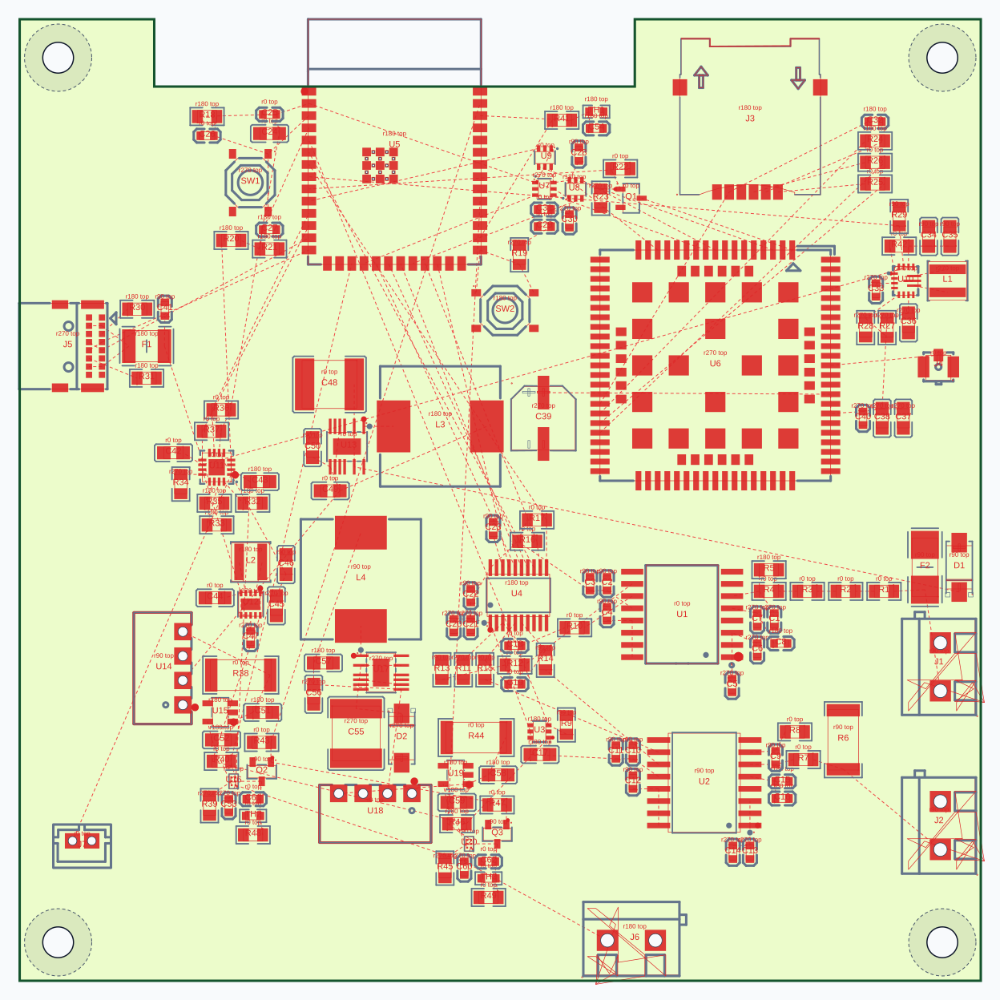

Одинаковая схема, контур и фиксированная механика. «До» — состояние ветки b747758. «После» — сборка обвязки в реальном окружении J5 и ограниченный мягкий отступ между блоками. Зелёная линия в USB — настоящий край платы. Нажмите изображение для открытия SVG.
Результат смешанный. В USB уменьшилось число пересечений чужих площадок, но выросло число пересечений линий. Полная перепаковка ухудшила электрические метрики платы. Проверены четыре гипотезы упаковки: с отступами, плотная и два набора альтернативных блоков; выбран первый вариант. Это экспериментальный результат, а не подтверждение общего улучшения платы.
Проверка отчёта: before: OK, 154 компонентов, сдвинуто фиксированных: 0; after: OK, 154 компонентов, сдвинуто фиксированных: 0. Метрики прямых линий MST служат для сравнения размещения; это не результат трассировки.
| USB: J5 + usb_input | До | После |
|---|---|---|
| Длина MST, мм | 27.15 | 25.16 |
| Пересечения линий | 2.00 | 3.00 |
| Пересечения чужих падов | 5.00 | 1.00 |


| Вся Telemetry | До | После |
|---|---|---|
| Длина MST, мм | 2261.00 | 2392.86 |
| Пересечения линий | 249.00 | 299.00 |
| Пересечения чужих падов | 240.00 | 296.00 |
Медианный ближайший зазор между исходными DSL-блоками: before 0.42 мм → after 0.51 мм. Блоков с соседом ближе 1 мм: before 34/35 → after 27/35. Это описательная метрика: тесное соседство сильно связанных блоков допустимо.


Все варианты сохраняют положение J5. На плате выбирается допустимая компоновка обвязки, без перемещения якоря.
Четыре компонента R30, R31, F1 и C41 взяты из новой сборки; все остальные позиции — из «До». Это отдельный контрольный эксперимент, не результат board packaging. Геометрия и ограничения проверены. Длина MST 2258.51 мм, пересечений линий 253, чужих площадок 235.

ASM только четырёх компонентов USB. Метрики контроля воспроизводятся при применении к исходной компоновке «До».
ASM JSON после · ASM JSON до · Численные результаты. Контур и фиксированные компоненты исключены из команды перемещения; файл пока не применён в EasyEDA.